Japan's Food
Japan has four seasons and traditional cuisine, or “wa-shoku”, appreciates each season with its unique offerings. Connecting with nature, using locally sourced, fresh ingredients, using cooking techniques and minimal seasoning to bring out the natural flavor, along with a pleasant presentation are the keys to traditional cuisine.
While mainland Asia cuisine typically cooks in oil, Japanese cuisine is prepared mainly in water. The main method of food preservation was pickling, drying and fermenting. Sushi originated as a way of preserving fish by fermenting it in boiled rice. Salted fish placed in rice are preserved by lactic acid fermentation. It was in the Edo period (15th century), sushi began being consumed without fermentation.
Airports and train stations in Japan will have shops filled entirely with beautifully wrapped food. When visiting someone in Japan or as a way to say thank you, a “temiyage” (gift) of mochi or matcha (green tea) flavored snack is bought in one of these shops to exchange. When visiting Japan, the foods you must try are
Sushi
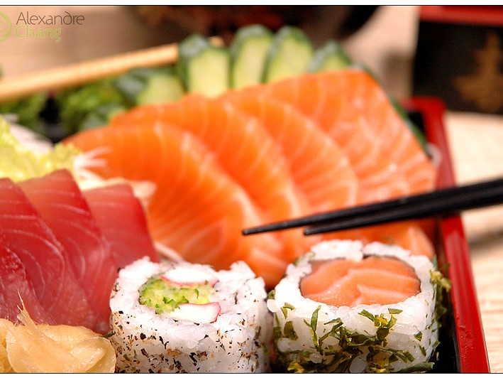Use your hands, but don't mix wasabi and soy sauce. Dab wasabi on side of sushi then dip, ony the meat.
Sashimi
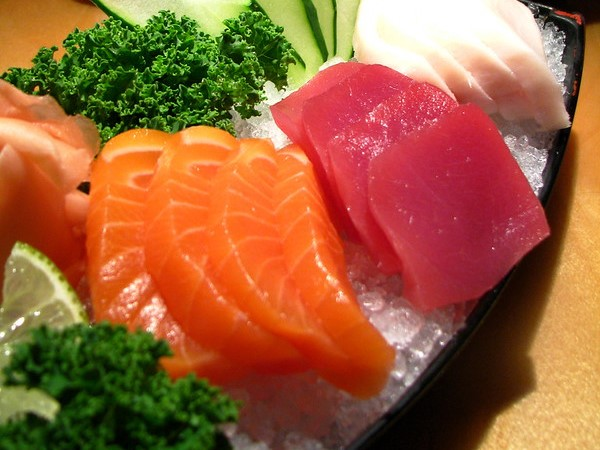Thinly sliced fress raw fish or meat,always eat with chopsticks
Temaki
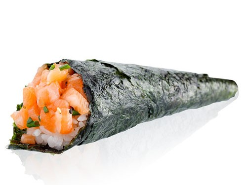A cone-shaped seaweed roll filled with rice and sushi ingredients, eaten with fingers.
Ramen
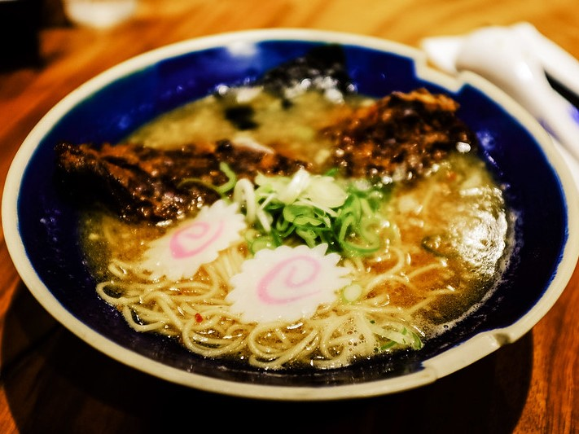Thin wheat noodles served in a meat or fish-based broth, with a variety of toppings based on regions.
Soba
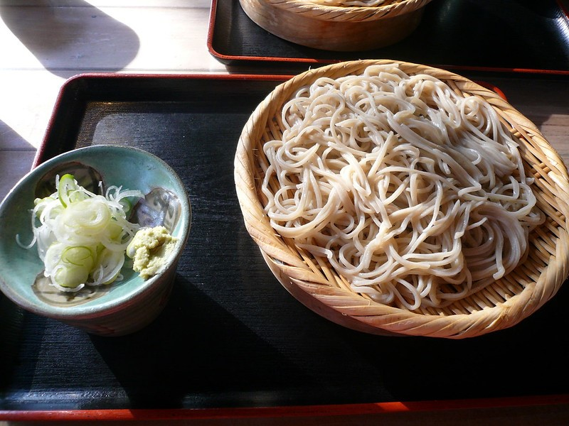Thin buckwheat flour noodles,served cold with dipping sauce, my Mom's favorite.
Udon
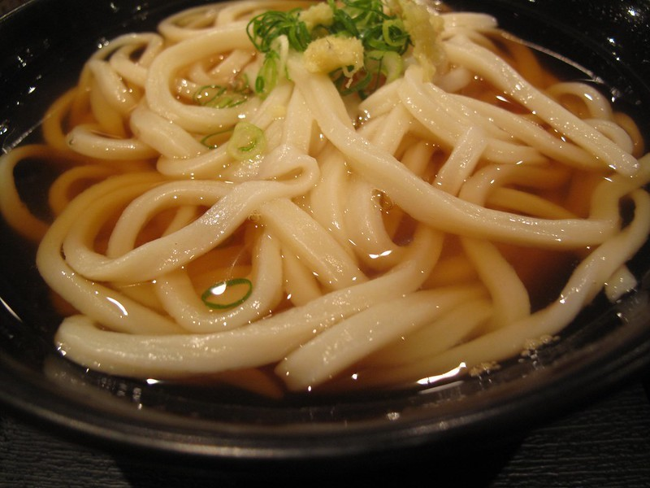Thick, wheat flour noodles often served as noodles soup witha variety of toppings.
Tempura
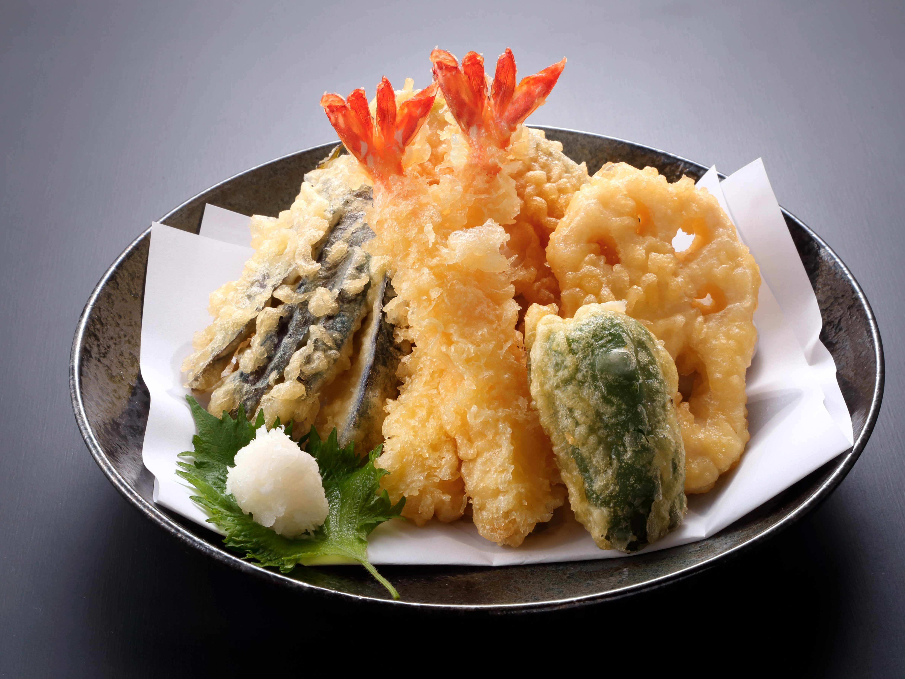Batter dipped and fried. Fried vegetables, meat and seafood.
Okonomiyaki
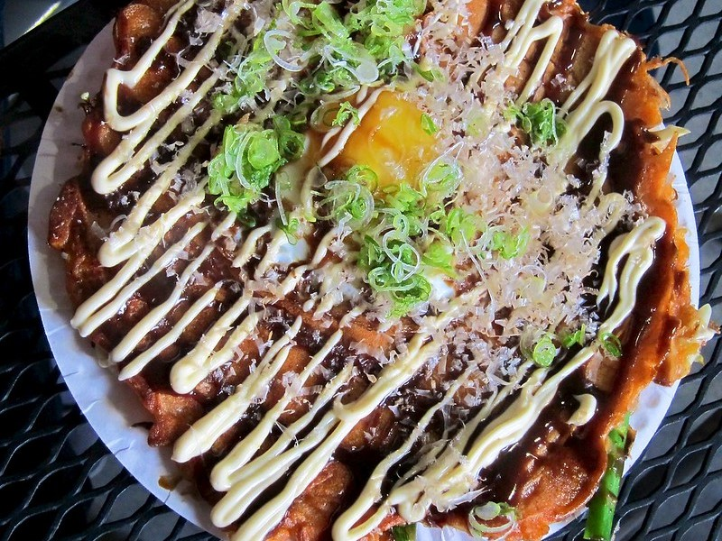Savory pancake/omelette filled with a variety of ingredients (veggies, meat, noodles) depends on the region.
Shabu Shabu
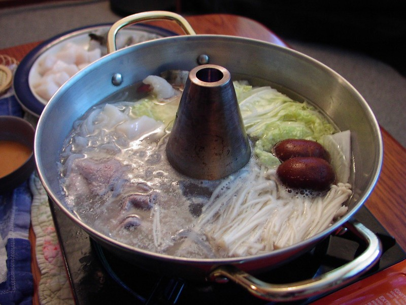Ideally eaten with friends, it's hotpot dish. Thinly sliced meat and vegies are dipped in, shared broth over rice at end.
Karaage
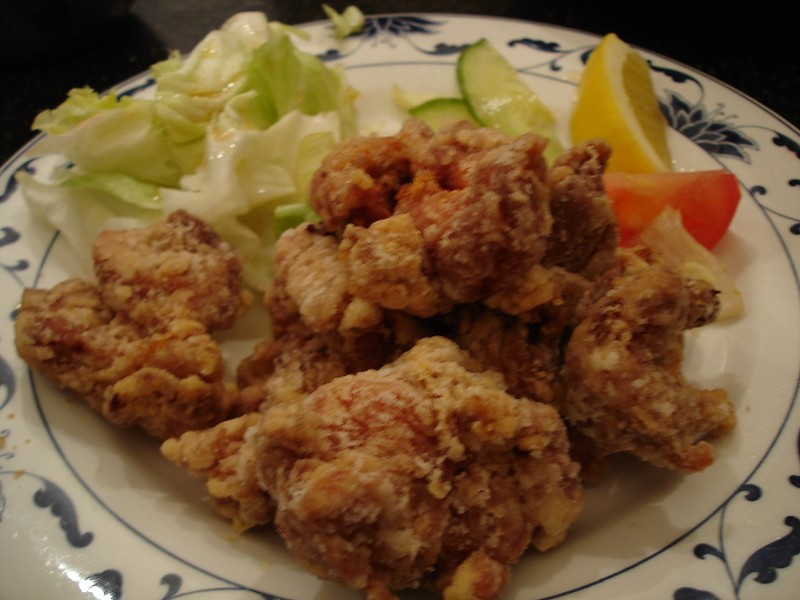Often used in reference to fried chicken in Japan, it is really a cooking method used in cooking meat.
Yakitori
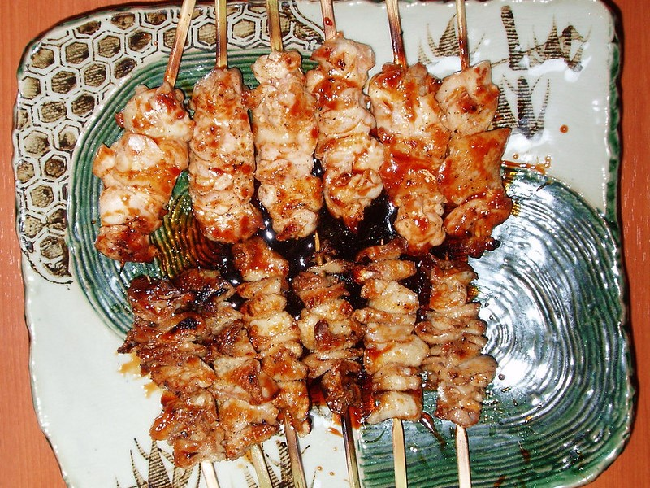Street/bar food, skewered and cooked over a grill
Onigiri
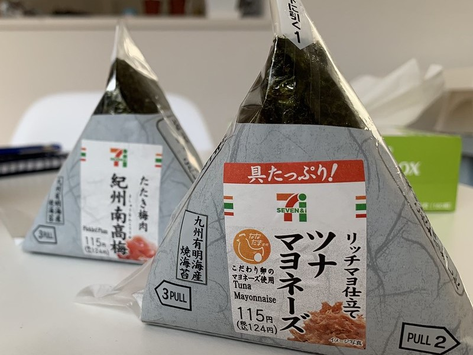A rice ball wrapped in seaweed. Sometimes filled with a salty or sour ingredient. Found at convenience stores, makes a healthy snack.
Gyudon
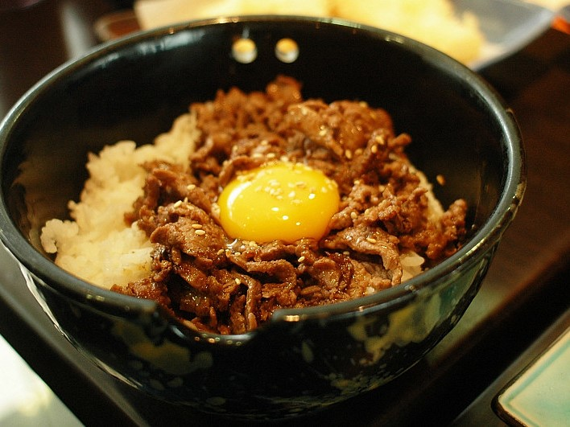Thinly sliced beef, onions and sauce served over a bowl of rice.
Tonkatsu
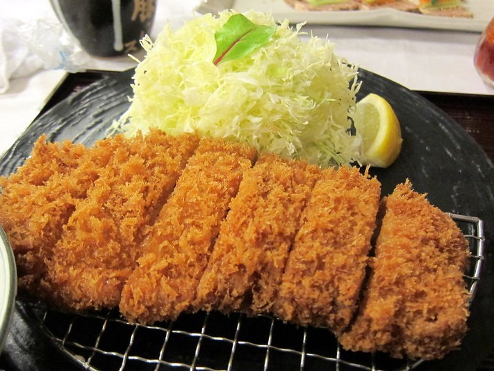A breaded pork cutlet deep fried, tempura style, served alone with shedded cabbage, in curry or a sandwich.
Gyoza
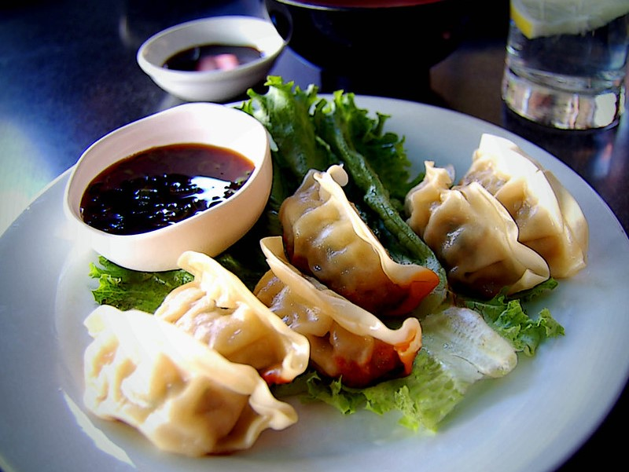Potstickers/dumplings filled with meat/veggies and dipped into a tasty sauce
Nikuman
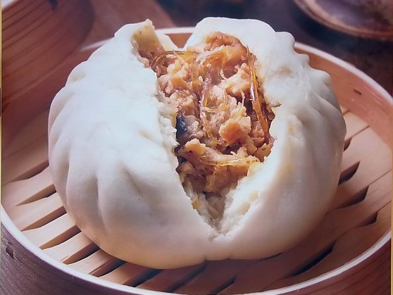Made from flour dough, filled with ground beef or pork, they are steamed street food often sold at festivals
Nattō
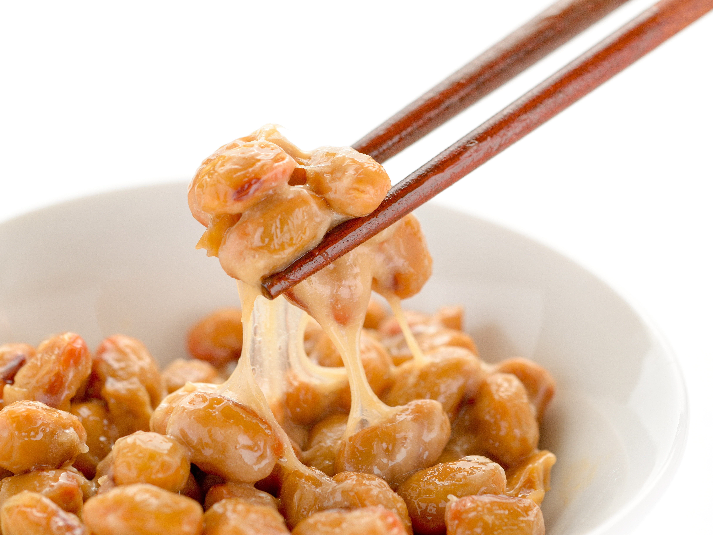Sticky, slimy, traditional beans often eaten at breakfast. Try it for the experience.
Fugu
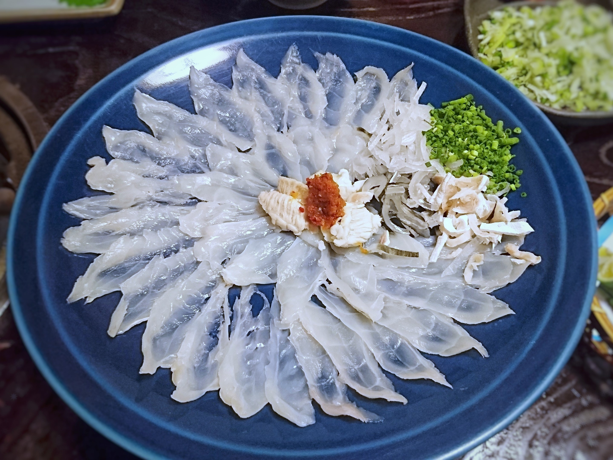Poison puffer fish, one of the most celebrated dishes in Japanese cuisine.
Kobe Beef
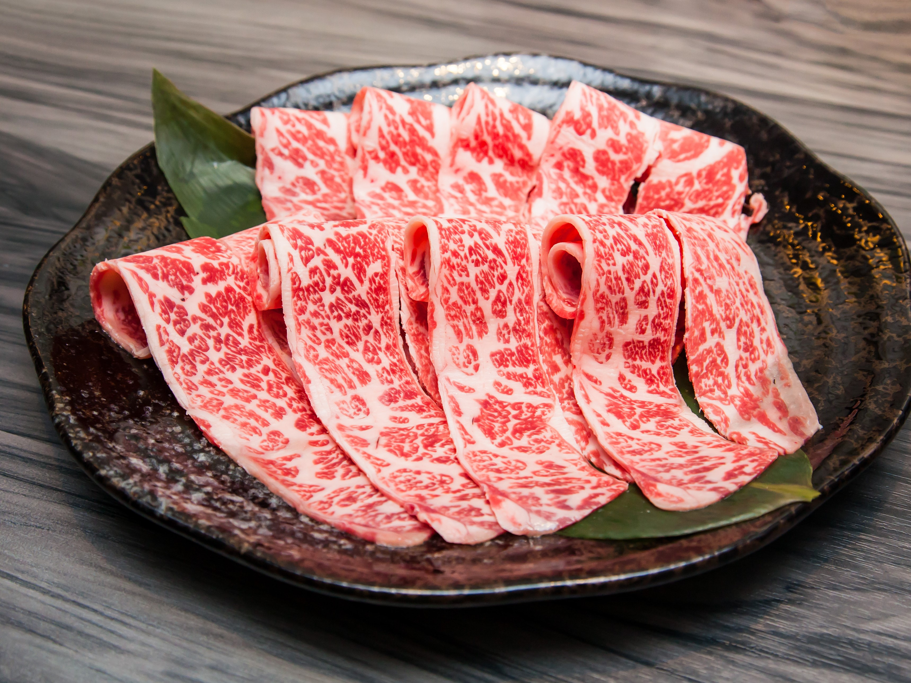A delicacy, the cattle get beer and massages, the beef is valued for its tenderness and flavor.
Mochi
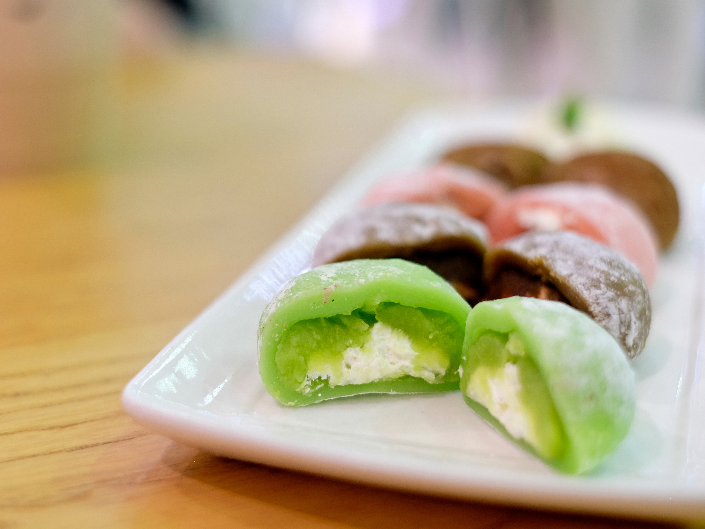Rice cakes typically filled with sweetened red beanpaste.